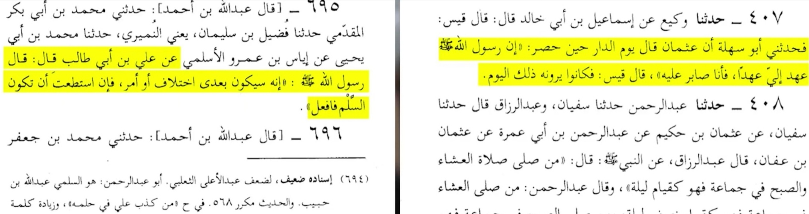

إبصار العمياء في إثبات الهجوم على دار الزهراء - عليها الصلاة والسلام -
بسم الله الرحمن الرحيم، الحمد لله رب العالمين والصلاة والسلام على رسول الله وآله الأطهار وعجل فرجهم والعن عدوهم أجمعين الى يوم الدين أما بعد:
السلام عليكم ورحمة الله وبركاته، في هذا المقال سنثبت أن عمر بن الخطاب قد هجم على دار الزهراء عليها الصلاة والسلام وأيضاً سنرد على بعض الشبهات منها: لماذا لم يدافع امير المؤمنين عليه الصلاة والسلام؟ اللخ...
١ - ما جاء في المصنف لأبن ابي شيبة:

كيف دخل عمر بن الخطاب في دار فاطمة؟ إذا طرق الباب وفتحت الباب فاطمة، فهذا طعن في السيدة الزهراء عليها الصلاة والسلام إنها تدخل الرجال الى بيتها. أما اذا عمر بن الخطاب اقتحم البيت، فهذا طعن في عمر بن الخطاب ايضاً.
أما قوله: إن علي كان في البيت (او احدى سادة بني هاشم) :
فنقول: علي كان خارج البيت، الدليل في نفس الرواية، حيث دخل علي ثم أخبرته فاطمة عليهما الصلاة والسلام بالخبر.
معلومة:
قد ذُكِرت في مصادر عديدة لكن تم بتر النقاش بين عمر وفاطمة واستبدلوها بـ"كلمها، وكذا وكذا" كما جاء في فضائل الصحابة.
٢ - ماجاء في تاريخ الطبري - الطبري - ج ٢ - الصفحة ٦١٩

صحة الرواية:
يونس بن عبد الأعلى:
https://www.google.com/amp/s/www.islamweb.net/amp/ar/library/index.php%3fpage=bookcontents&flag=1&ID=2273&bk_no=60
يحيى بن عبدالله بن بكير:
https://www.google.com/amp/s/www.islamweb.net/amp/ar/library/index.php%3fpage=bookcontents&flag=1&ID=1885&bk_no=60
الليث بن سعد:
https://www.google.com/amp/s/www.islamweb.net/amp/ar/library/index.php%3fpage=bookcontents&flag=1&ID=1300&bk_no=60
علوان :
https://al-maktaba.org/book/5816/3808
صالح بن كيسان :
https://www.google.com/amp/s/www.islamweb.net/amp/ar/library/index.php%3fpage=bookcontents&flag=1&ID=913&bk_no=60
أما عمر بن عبدالرحمن بن عوف فهو ابن عبدالرحمن بن عوف المبشر بالجنة عند السنة.
إذا الرواية كل رجالها ثقات.ايضاً تم بتر الرواية بكذا وكذا في مصادر أخرى.
٣ - تعليق حول كلام ابن تيمية:

أولاً:
في كلام ابن تيمية طعن في امير المؤمنين والسيدة الزهراء عليهما الصلاة والسلام، فإنهم كانوا يخبئون الأموال التي من المفترض ان تعطى للفقراء في بيتهم (حاشاهم)
ولفهمها أكثر لنعرف معنى كلمة "كبس".

٤ - ما جاء في أنساب الأشراف للبلاذري:

https://www.islamweb.net/amp/ar/library/index.php?page=bookcontents&flag=1&ID=2494&bk_no=60
إذا البلاذري هو عالم يؤخذ به، نعود إلى الرواية. الآن سنتأكد من سندها:
المدائني:
https://www.google.com/amp/s/www.islamweb.net/amp/ar/library/index.php%3fpage=bookcontents&flag=1&ID=1788&bk_no=60
مسلمة بن محارب، لديه رواية في البخاري:
https://al-maktaba.org/book/12823/10977
سليمان التيمي:
https://www.google.com/amp/s/www.islamweb.net/amp/ar/library/index.php%3fpage=bookcontents&flag=1&ID=1022&bk_no=60
ابن عون:
https://www.google.com/amp/s/www.islamweb.net/amp/ar/library/index.php%3fpage=bookcontents&flag=1&ID=1087&bk_no=60
إذا الرواية كل رجالها ثقات وصحيحة، وفيه تهديد واضح في حرق الدار.
٥ - ما جاء في تاريخ الطبري:

سند الرواية:
ابن حميد:
https://www.google.com/amp/s/www.islamweb.net/amp/ar/library/index.php%3fpage=bookcontents&flag=1&ID=2098&bk_no=60
جرير:
https://www.google.com/amp/s/www.islamweb.net/amp/ar/library/index.php%3fpage=bookcontents&flag=1&ID=1445&bk_no=60
مغيرة:
https://www.google.com/amp/s/www.islamweb.net/amp/ar/library/index.php%3fpage=bookcontents&flag=1&ID=930&bk_no=60
زياد بن كليب:
https://al-maktaba.org/book/3310/1430
اذا الرواية لا غبار عليها.
نرى في هذه الرواية ان علي كان في البيت، وهذا يثبت قول علمائنا الشيعة: أنها كانت هجمتين لا هجمة واحدة.
س/ هل حرق عمر البيت؟
ج/ نعم، وذلك بسبب أن عمر حلف بالله أن يحرق عليهم البيت، كما جاء في رواية المصنف "وأيم الله ما ذاك بمانعي". س/ متى بايع علي؟
ج/ جاء في صحيح البخاري :
أنَّ فاطِمَةَ عليها السَّلامُ بنْتَ النَّبيِّ صلَّى اللهُ عليه وسلَّمَ، أرْسَلَتْ إلى أبِي بَكْرٍ تَسْأَلُهُ مِيراثَها مِن رَسولِ اللَّهِ صلَّى اللهُ عليه وسلَّمَ ممَّا أفاءَ اللَّهُ عليه بالمَدِينَةِ، وفَدَكٍ، وما بَقِيَ مِن خُمُسِ خَيْبَرَ، فقالَ أبو بَكْرٍ: إنَّ رَسولَ اللَّهِ صلَّى اللهُ عليه وسلَّمَ قالَ: لا نُورَثُ، ما تَرَكْنا صَدَقَةٌ، إنَّما يَأْكُلُ آلُ مُحَمَّدٍ -صلَّى اللهُ عليه وسلَّمَ- في هذا المالِ، وإنِّي واللَّهِ لا أُغَيِّرُ شيئًا مِن صَدَقَةِ رَسولِ اللَّهِ صلَّى اللهُ عليه وسلَّمَ عن حالِها الَّتي كانَ عليها في عَهْدِ رَسولِ اللَّهِ صلَّى اللهُ عليه وسلَّمَ، ولَأَعْمَلَنَّ فيها بما عَمِلَ به رَسولُ اللَّهِ صلَّى اللهُ عليه وسلَّمَ. فأبَى أبو بَكْرٍ أنْ يَدْفَعَ إلى فاطِمَةَ مِنْها شيئًا، فَوَجَدَتْ فاطِمَةُ علَى أبِي بَكْرٍ في ذلكَ، فَهَجَرَتْهُ فَلَمْ تُكَلِّمْهُ حتَّى تُوُفِّيَتْ، وعاشَتْ بَعْدَ النَّبيِّ صلَّى اللهُ عليه وسلَّمَ سِتَّةَ أشْهُرٍ، فَلَمَّا تُوُفِّيَتْ دَفَنَها زَوْجُها عَلِيٌّ لَيْلًا، ولَمْ يُؤْذِنْ بها أبا بَكْرٍ وصَلَّى عليها، وكانَ لِعَلِيٍّ مِنَ النَّاسِ وَجْهٌ حَياةَ فاطِمَةَ، فَلَمَّا تُوُفِّيَتِ اسْتَنْكَرَ عَلِيٌّ وُجُوهَ النَّاسِ، فالْتَمَسَ مُصالَحَةَ أبِي بَكْرٍ ومُبايَعَتَهُ،
، الى آخر الحديث…. ولَمْ يَكُنْ يُبايِعُ تِلكَ الأشْهُرَ
الراوي : عائشة أم المؤمنين | المحدث : البخاري | المصدر : صحيح البخاري الصفحة أو الرقم: 4240 | خلاصة حكم المحدث : [صحيح]
هنا سنقع في وجهان مختلفان:
١ - بايع علي بعد دفن فاطمة (بحسب صحيح البخاري) ٢ - بايع علي قبل حرق الدار (بحسب المصنف لأبن ابي شيبه) وبهذا يثبت ان عمر قسم كذباً.
فهنا السني يقع في حيرة، هل البخاري اخطئ؟ ام ابن ابي شيبة؟
٦ - ما جاء في العقد الفريد:

إثباتات أخرى في اثبات غضب فاطمة على ابي بكر وعمر:
١ - قبرها مخفي إلى الآن، لأنها لا تريد أن يُصلى عليها المنافقين (بحسب الكتب الشيعية)
ايضاً بحسب صحيح البخاري انها ماتت وهي غاضبة على ابي بكر :النص طويل لذا إستقطع منه موضع الشاهد:
فقالَ أبو بَكْرٍ: إنَّ رَسولَ اللَّهِ صلَّى اللهُ عليه وسلَّمَ قالَ: لا نُورَثُ، ما تَرَكْنا صَدَقَةٌ، إنَّما يَأْكُلُ آلُ مُحَمَّدٍ -صلَّى اللهُ عليه وسلَّمَ- في هذا المالِ، وإنِّي واللَّهِ لا أُغَيِّرُ شيئًا مِن صَدَقَةِ رَسولِ اللَّهِ صلَّى اللهُ عليه وسلَّمَ عن حالِها الَّتي كانَ عليها في عَهْدِ رَسولِ اللَّهِ صلَّى اللهُ عليه وسلَّمَ، ولَأَعْمَلَنَّ فيها بما عَمِلَ به رَسولُ اللَّهِ صلَّى اللهُ عليه وسلَّمَ. فأبَى أبو بَكْرٍ أنْ يَدْفَعَ إلى فاطِمَةَ مِنْها شيئًا، فَوَجَدَتْ فاطِمَةُ علَى أبِي بَكْرٍ في ذلكَ،
فَهَجَرَتْهُ فَلَمْ تُكَلِّمْهُ حتَّى تُوُفِّيَتْ
هنا ابي بكر اغضب الله عز وجل، بحسب حديث (فاطمة بضعة مني من اغضبها اغضبني ومن اغضبني فقد اغضب الله) الثابت في جميع الكتب السنية والشيعية.
٢ - عدم صلاة أبي بكر عليها: نفس رواية البخاري :
فَلَمَّا تُوُفِّيَتْ دَفَنَها زَوْجُها عَلِيٌّ لَيْلًا، ولَمْ يُؤْذِنْ بها أبا بَكْرٍ وصَلَّى عليها.
٧ - ما جاء في كتاب السنة لعبدالله بن أحمد بن حنبل:
 السنة لعبدالله بن أحمد بن حنبل.png)
٨ - الدلالة على أن علي جاء مكرها للبيعة:

"فجاءوا به"، تختلف عن "جاء معهم"
مثال : "جاء السارق مع الشرطة" تختلف عن:
"ذهبوا الشرطة فجاءوا به".
س/ أين شجاعة علي عليه الصلاة والسلام؟
ج/ قد وصى رسول الله صلى الله عليه وآله وسلّم علي في السلم من بعده، وهذه الرواية موجودة في السنة والشيعة.ففي الكتب الشيعية، فهذا ما جاء في كتاب الغيبة للشيخ الطوسي :

- إنَّهُ سيكونُ بعدي اختلافٌ أو أمرٌ فإنِ استطعتَ أن تكونَ السِّلْمَ فافعلْ
الراوي : علي بن أبي طالب | المحدث : أحمد شاكر | المصدر : تخريج المسند لشاكر الصفحة أو الرقم : 2/85 | خلاصة حكم المحدث : إسناده صحيح
س/ هل دافع علي عن الزهراء عليهما الصلاة والسلام؟
ج/ نعم، كما جاء في كتاب بحار الانوار وكتاب سليم بن قيس الهلالي:


س/ لماذا لم يقتص امير المؤمنين عليه الصلاة والسلام منهم؟
ج/ لأن لم يكن لديه أنصار، كما ورد في بحار الانوار وكتاب سليم بن قيس الهلالي، أستعرض لكم رواية سليم بن قيس:

توضيح:
قال رسول الله صلى الله عليه وآله وسلّم لعلي عليه الصلاة والسلام : (أنت مني بمنزلة هارون من موسى) ،الحديث هذا ثابت في كل المصادر.هناك وجه شبه بين هارون وبين علي عليه الصلاة والسلام، فعندما ذهب موسى واستخلف هارون على قومه عبدوا العجل، فلماذا سكت السامري؟؟ الجواب هو: لقلة الناصر ولئلا تقع فتنة بين المسلمين.
قال تعالى : قَالَ يَا ابْنَ أُمَّ لَا تَأْخُذْ بِلِحْيَتِي وَلَا بِرَأْسِي ۖ إِنِّي خَشِيتُ أَنْ تَقُولَ
فَرَّقْتَ بَيْنَ بَنِي إِسْرَائِيلَ وَلَمْ تَرْقُبْ قَوْلِي
نفس المسألة تطبقها على امير المؤمنين عليه الصلاة والسلام، فسكت لقلة الناصر ولئلا تقع فتنة بين المسلمين.
أيضاً في آية أخرى:
وَلَمَّا رَجَعَ مُوسَىٰ إِلَىٰ قَوْمِهِ غَضْبَانَ أَسِفًا قَالَ بِئْسَمَا خَلَفْتُمُونِي مِنْ بَعْدِي ۖ أَعَجِلْتُمْ أَمْرَ رَبِّكُمْ ۖ وَأَلْقَى الْأَلْوَاحَ وَأَخَذَ بِرَأْسِ أَخِيهِ يَجُرُّهُ إِلَيْهِ ۚ
قَالَ ابْنَ أُمَّ إِنَّ الْقَوْمَ اسْتَضْعَفُونِي وَكَادُوا يَقْتُلُونَنِي
فَلَا تُشْمِتْ بِيَ الْأَعْدَاءَ وَلَا تَجْعَلْنِي مَعَ الْقَوْمِ الظَّالِمِينَ
هذا الكلام "قَالَ ابْنَ أُمَّ إِنَّ الْقَوْمَ اسْتَضْعَفُونِي وَكَادُوا يَقْتُلُونَنِي" نفسه بالضبط قاله علي عليه الصلاة والسلام في بحار الانوار:
بحار الأنوار - العلامة المجلسي - ج ٢٨ - الصفحة ٢٢٨
قال: فأخرجوه من منزله ملببا ومروا به على قبر النبي (صلى الله عليه وآله) قال: فسمعته يقول: " يا بن أم إن القوم استضعفوني وكادوا يقتلونني "
تشابه وصية رسول الله صلى الله عليه وآله وسلّم لأمير المؤمنين عليه الصلاة والسلام مع وصية رسول الله لعثمان:

إحتجاج:
قال ابن تيمية في منهاج السنة ج ٦ ص ١٥٦ (مضمونه) :أن صبر عثمان ولم يقاتل وكف الأذى من أعظم فضائله وانه أصبر الناس على من نال من عرضه.
فعجيب والله، حلال عند عثمان وحرام عند علي؟
وهنا أختم بحثي ولله الحمد، إذا لديك أية أسئلة او رد على الشبهات تفضل إنضم لسيرفرنا في الديسكورد الموجود في صفحة حول.
دمتم سالمين.